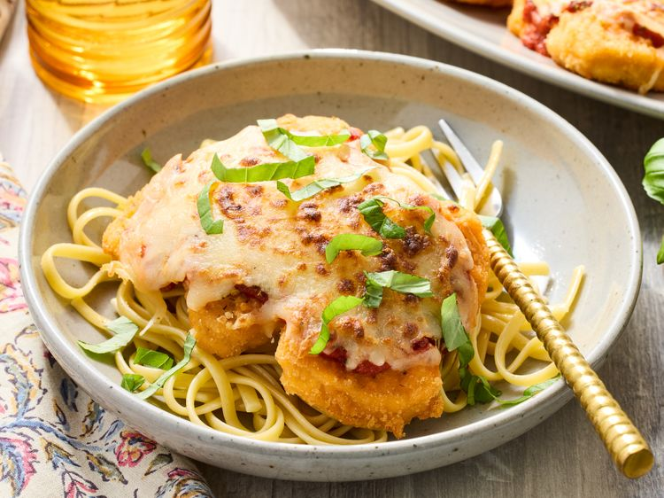

Home
Chicken Nugget Parmesan Recipe

Chicken Nugget Parmesan turns a freezer staple into a tasty dinner by layering crispy
chicken nuggets with marinara sauce, melted mozzarella, and Parmesan cheese. It’s a fun,
family-friendly twist on classic chicken Parmesan--quick and easy to make for an easy
weeknight meal or game-day snack and something you can pull out of the pantry for a last
minute meal.
Ingredients
- 1 (29-ounce) package frozen chicken nuggets (about 45 nuggets)
- 1 1/2 cups shredded mozzarella cheese
- 1 cup shredded Parmesan cheese
- 1 (15-ounce) jar marinara sauce
- 1 teaspoon dried Italian seasoning
- 1/2 teaspoon crushed red pepper
- chopped fresh basil or parsley, for garnish (optional)
Steps
- Preheat oven to 400 degrees F (200 degrees C). Line a 13x18-inch rimmed baking sheet with foil. Coat foil with cooking spray.
- Arrange chicken nuggets in a single layer on the prepared baking sheet. Bake until heated through and crispy, 13 to 15 minutes.
- Adjust oven rack to the top third of the oven. Preheat broiler.
- Group the baked chicken nuggets into servings of 5 nuggets each.
- Combine the mozzarella and Parmesan cheeses in a bowl. Spoon 3 tablespoons marinara sauce evenly over each portion. Sprinkle with Italian seasoning and crushed red pepper. Top each portion with 1/3 cup cheese mixture.
- Broil 4 to 5 inches from the heat until the cheese is melted and bubbly, 1 to 2 minutes.
- Garnish with basil or parsley before serving, if desired.